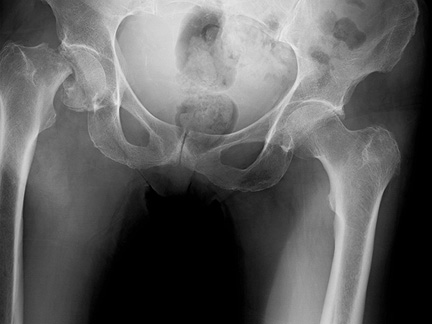
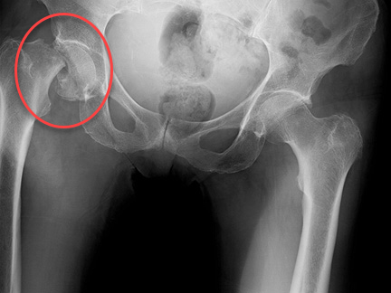

Lab 5 - Module 1 - Hip and Anterior Thigh - Osteology of the Hip and Thigh: Page 1 of 6
READINGS:Gray's Anatomy for Students (Fourth Edition): Pages: 398-401, 418-422, 433-437, 481-486, 546-548 |
CASE REPORT:A 72-year-old female who lives with her oldest son is found on the floor of her bedroom, unable to rise. She tells her son she slipped on the rug and fell to the floor. She complains of severe pain in her right hip and is unable to stand. An ambulance is called and she is taken to the hospital on a stretcher. On arrival she is given intravenous morphine and is immobilized. She has no significant past medical or surgical history and takes no medications. |
EXAMINATION: |
|
|
|  |
Can you identify the location of the fracture? |
|
|
 |
|